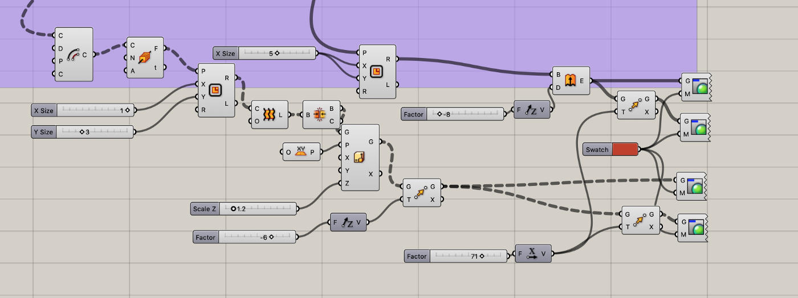
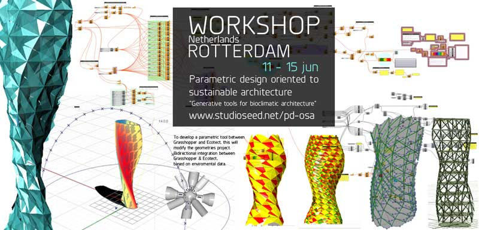
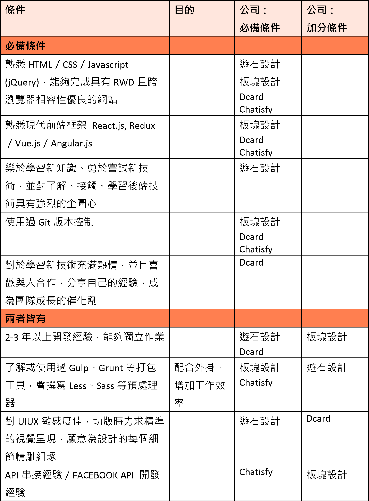
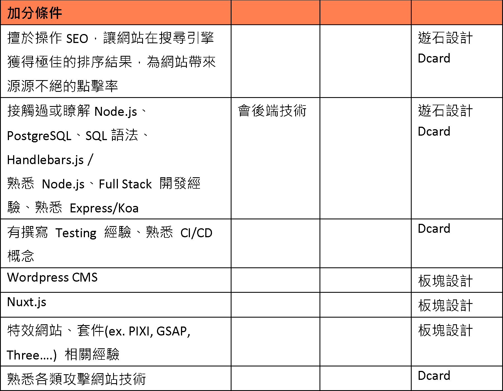
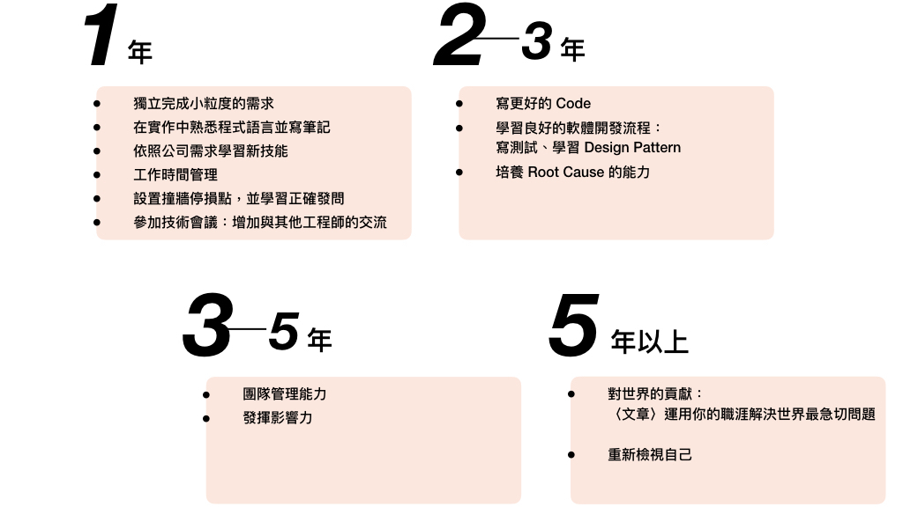
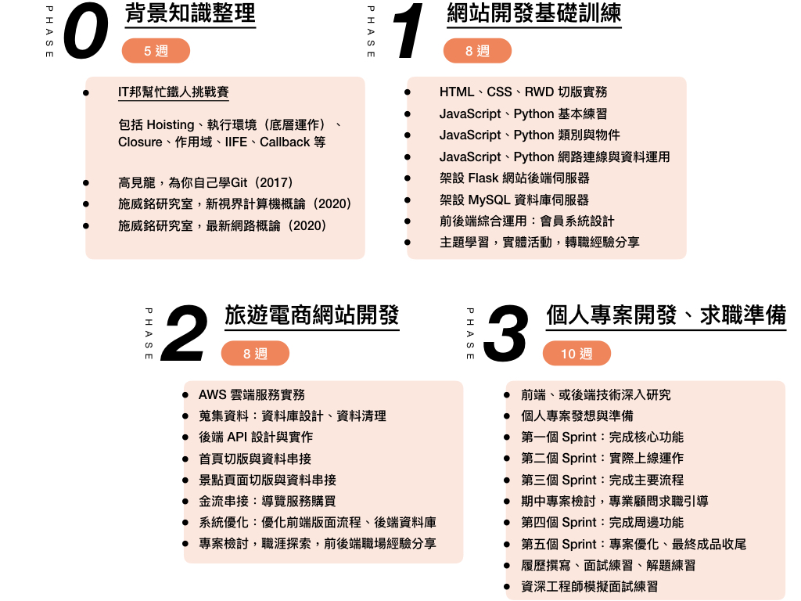

<!DOCTYPE html>
<html lang="en">
    <head>
        <link href="styles/main.css" rel="stylesheet">
        <meta charset="UTF-8">
        <meta name="viewport" content="width=device-width, initial-scale=1.0">
        <link rel="stylesheet" href="https://stackpath.bootstrapcdn.com/bootstrap/4.4.1/css/bootstrap.min.css" integrity="sha384-Vkoo8x4CGsO3+Hhxv8T/Q5PaXtkKtu6ug5TOeNV6gBiFeWPGFN9MuhOf23Q9Ifjh" crossorigin="anonymous">
    </head>

    <body class="grid-main">
        <div class="content">
            <div id="section-1">
                <h1>自我介紹　</h1>
                
                <p>「思路清晰、邏輯、善於規劃及組織、謹慎、兼具感性」是致賀研究所畢業的卡片上，同儕們的留言。</p>
                <p>我是廖浩宇，今年夏天剛從台科設計所畢業。我想成為前端工程師——在七年設計學習、兩年半實習、六次展覽、三篇國內外研討會文章之後——一年多前我仍深深被程式編寫的思維方式所吸引，透過各種途徑自學前端語言直到現在。</p>
                <p>自學經驗中的困難讓我十分清楚我需要「彭彭扶持計劃訓練營」作為一個正確方向的引導者。自身設計背景及認真縝密的性格，讓我認為我也是「彭彭扶持計劃訓練營」在尋找的那一個人。</p>
            </div>
            <div class="section" id="section-2">
                <h1>為什麼想成為　　<h1>
                    <h1>前端工程師？</h1>
                    <div class="outline">
                        <h6>——契機：與程式有關的兩門課</h6>
                        <h6>——程式編寫：帶來設計無法帶給我的動力與滿足</h6>
                        <h6>——前端工程：以符合自己個性的程式專長實踐產品</h6>
                    </div>
                    <h2>契機：與程式有關的兩門課</h2>
                    <p>我想成為前端工程師，是因為在求學多年後，我發現程式編寫能帶給我動力與滿足，這些是設計無法帶給我的。</p>
                    <p>我念了五年大學、兩年研究所，都在念設計。一年半前，碩二上我初次接觸程式，那時候我上了兩門跟程式有關的課，「行銷資料科學」和「參數式設計」——前者顧名思義，後者是用程式來探索設計。我發現我非常被程式的思維吸引，而且我對於這兩門課算是蠻在行的，上課時同學聽不懂也會問我，若我也不明白，更會自發性地去找書進一步鑽研。</p>
                    
                    
                    <p class="illustration">圖、參數式設計軟體將很多function視覺化成一個單元，然後透過串接這些單元建立一個設計模型，並控制最初輸入的那幾個參數，調整並產出很多潛在的造型。</p>
                    <h2>程式編寫：帶來設計無法帶給我的動力與滿足</h2>
                    <p>我喜歡編寫程式，是因為一切都有它的道理，因為程式語言擁有既定的規則，當你的程式出現錯誤，必定有其有原因。技術文件可以提供給你一個不斷因果推論的方向。舉個例子來說，我曾經非常困惑為什麼使用JavaScript，可以先打一個function，然後再宣告它？但如果你能瞭解Hoisting，會了解一切的結果都是非常合理的。這種恍然大悟、融會貫通的感覺是非常好的、非常令人振奮，一切都是有它的道理，一切都是那麼自然。</p>
                    <p>程式語言可以做到設計做不到的，它可以告訴我「為什麼」——也是多年後才能正視自己不適合做設計的原因，設計是「仰賴直覺」來產生設計靈感的，耳熟能詳的發散式思考、Brain Storming其實就是窮舉，說明白一點就是亂槍打鳥，然後用直覺判斷，從中選一個不錯的——然而程式語言讓我有明確的方向充實、進步。</p>
                    <h2>前端工程：以符合自己個性的程式專長實踐產品</h2>
                    <p>在修習兩門課後，我利用台大開放式平台「計算機概論」課堂學C#，後來在碩二下的時候，開始嘗試前端，覺得前端工程讓我能從人群中脫穎而出、一展長才——思維上，程式語言能帶給我滿滿的動力與滿足感，同時我對於視覺化的事物是敏銳而有興趣的，這是設計訓練所帶來的禮物——這便是我要的，在明確的技術知識中充實自我，用符合自己個性的程式專長，在一個團隊中實踐產品；看著它一步一步誕生，就可以為我帶來滿滿的成就感！</p>
            </div>
            <div class="section" id="section-3">
                <h1>為了成為工程師，</h1>
                <h1>曾經做過什麼努力？</h1>
                <div class="outline">
                    <h6>——Jon Duckett、Wix、Google</h6>
                    <h6>——自學的困難</h6>
                </div>
                <h2>Jon Duckett、Wix、Google</h2>
                <p>在這一年多來，我透過各種途徑自學前端語言，例如：清大開放式課程平台（Web Programming, Technologies, and Applications課程）、書籍（Jon Duckett的系列書籍）。比起一直反覆操作單元練習，我認為直接投入一個專案能帶來更多的挫折與學習能量，因此我會臨摹Wix的網頁切版方式，透過Inspector看業界如何思考網頁的結構。</p>
                <p>遇到問題時，在Stack Overflow上我會看到前人如何解決我遇到的問題，透過MDN、W3schools，我能閱讀關於一個Property、函式的確切定義及使用方法。像做實驗，一次只更改一個部分去驗證自己的假設來Debug，我很沈浸這個推敲的過程，最有印象的一個Debug就是發現我載入的JQuery是slim版本，所以我所設定的動態函數都不會正常運作。</p>
                <h2>自學的困難</h2>
                <p>然而我自學的過程中也遇到許多煩惱。第一，我並不確定我在正確的方向上前進，因而會產生「我會不會花過多的時間鑽研一個技術（比如Bootstrap）？」、「我寫程式的方法真的和業界相似呢？」，要回答這些問題，我需要一個好的引導者。再者是自學時撞牆、卡住的時候，會打斷節奏、停止沈浸，這樣的狀況不行持續太久，俗話說「思而不學則殆」，就是在說光是思考但學不到要領會造成精神疲累而無所得，這樣也很容易就把問題拖著，難以鼓起勇氣去面對——我發現自己常耗費太多時間在研究同一個問題（後來才知道這表示你已到達停損點，準備問人了），因此縱然自己有排定學習的計畫，但時常會有拖延而無法如期達標的情況發生。</p>
                <p>基於自學經驗的深刻感受，讓我強烈感知自己需要他人的協助來完成自己的意志，而這也是為什麼我想加入彭彭扶持計劃訓練營的原因。</p>
            </div>
            <div class="section" id="section-4">
                <h1>對於工程師的</h1>
                <h1>　職業想像是什麼？</h1>
                <div class="outline">
                    <h6>——以徵才條件為基礎</h6>
                    <h6>——以前輩心得為基礎</h6>
                </div>
                <h2>以徵才條件為基礎</h2>
                <p>我對於工程師職業想像的來源有數個。首先，以前端工程師來說，他便是在公司中與設計師互動最密切者，原先便對於其工作內容略知一二。不過我進一步整理了數個公司對前端工程師的徵才條件，如下文，這反映其實際的工作內容：</p>
                <p>前端工程師應熟悉HTML／CSS／Javascript (jQuery) 及現代前端框架（React.js, Redux／Vue.js／Angular.js），使用Gulp、Sass等不同的外掛增加工作效率，能夠獨立完成具有RWD且跨瀏覽器相容性優良的網站，並使用Git來發展及維護網頁版本。</p>
                <p>業務上與UI設計師及後端工程師協作。面對前者之設計稿，應保持高度敏感度，切版時力求精準的視覺呈現，願意為設計的每個細節精雕細琢。另外，前端工程師應力求了解、接觸、學習後端技術，以和後端工程師有良好的協作關係。</p>
                <p>依據公司不同的取向，會期望前端工程師能夠擅於操作SEO（行銷目的）、前端特效套件（視覺效果取向之設計工作室）、了解甚至熟悉後端技術（小公司、分擔後端工程師業務）等。</p>
                
                
                <h2>以前輩心得為基礎</h2>
                <p>不過工程師在日常生活中，又是抱持著什麼心情在工作呢？在一篇我印象深刻的前輩心得〈轉職軟體工程師前，這3件事你該認真考慮〉中，作者提到對火候不夠的新手來說，「除錯」（debug）這個步驟會佔掉絕大部分的時間，甚至資深的工程師不只要處理自己的錯誤，還要處理別人的錯誤，越資深遇到的問題越棘手。進一步而言，若作為資深工程師，我是否會有勇氣帶領團隊，用效率較好的B語言將部分A語言的 API 服務重寫，讓整體速度提昇20倍以上？還是我只想要每天安安穩穩的寫程式、維護專案？</p>
                <p>令人抓不清頭緒Bug是十分挫折的，在自學程式的這段時間就發生過，最印象深刻的是，由於某些原因我所設定的網頁動態都不會正常運作，忙了整整一天才發現是因為我載入錯誤的JQuery版本（slim版本）。然而我覺得這是編寫程式最迷人的部分，我具有熱情的所在。</p>
                <p>編寫程式的背後永遠有一個「為什麼」，程式語言的一切都是規定好的，當你的程式出現錯誤，必定有其有原因。技術文件可以提供給你一個不斷因果推論的方向，恍然大悟的「Aha moment」來臨時，感覺是非常好的、非常令人振奮，一切都是有它的道理，一切都是那麼自然，同時提供我明確的方向充實、進步。</p>
                <p>所以我對於工程師的想像是什麼？呼應到一開始所提及的，相對於團隊中的設計師、專案經理等，工程師是產品的實踐者，他永保熱情，享受於浩瀚的知識中，以編程技術為磚瓦，讓團隊的心血Working。在職涯中我願能保持這樣的初心——附上我對於職涯的規劃如下圖，此以〈高速成長最佳時機！從新手到 3 年經驗的軟體工程師應該具備的實力〉影片為基礎，作者描繪了工程師在每個階段所會遇到的業務內容與挑戰，此外亦參酌其他所看過的文章整理而成。</p>
                
            </div>
            <div class="section" id="section-5">
                <h1>如果參與這個計畫，</br>　　　會怎麼</br>　安排學習時間？</h1>
                <div class="outline">
                    <h6>——知識累積 vs 知識轉化技術</h6>
                    <h6>——第零階段</h6>
                    <h6>——每日規劃</h6>
                </div>
                <h2>知識累積 vs 知識轉化技術</h2>
                <p>在細細閱讀三階段訓練營規劃後，如同彭彭於直播中所述「課程內容充實且緊湊」。而思考學習計畫時，我聯想到一篇網路文章中提及，技術學習的過程分為「知識累積」及「知識轉化技術」兩個階段，而我認為在訓練營開始之前自己宜先做好「知識累積」，其後在彭彭的規劃及引導下將「知識轉化技術」，實踐每個階段目標。</p>
                <div class="reference">
                    <p>在〈我在火箭隊學到突破程式邏輯的四種方法〉一文中，一個成功自學程式並轉職者寫下其自學的心法，其中我十分有感於「培養程式邏輯是偽議題，如何將知識轉換成技術才是重點」。</p>
                    <p>他以「學習騎腳踏車的經驗」為例，單憑知道如何騎腳踏車是不夠的，若有引導者提供他們的「心法技巧」，再加上自己持續探索「哪個方法讓他有感覺慢慢學會該技術」，最後自己才得以發現「屬於自己的訣竅」。簡單來說，這可以對應到技術學習的兩大階段：知識累積（知道如何騎腳踏車）及知識轉化技術（在既有知識上，探索自己的訣竅）。</p>
                </div>
                <h2>第零階段</h2>
                <p>如下圖，在訓練營三階段前，我加入了「第零階段」。每個階段有其階段目標作為檢驗學習成果的里程碑；而每個階段中，亦安排每週進度作為短期目標，令自己有明確的方向得以努力。其中「第零階段」，我預期將之前所學的Javascript知識作整理，將消化過的心得產出為IT邦幫忙的系列文章。同時規劃閱讀Git、計算機及網路概論等書籍，充實資工領域的背景知識。</p>
                
                <h2>每日規劃</h2>
                <p>自學的過程中，每日宜回答自己四個問題：「心情寫照」、「今日事項、困難及領悟」、「明日事項」、「本週規劃」，這亦可以呼應訓練營每週三次的進度回報。於每週最後一日，亦須將實際完成的部分與預設目標做比較，以掌握學習進度。</p>
                <p>為求專心自律，選擇母校圖書館作為自學環境，甚至若在訓練營結識志同道合的同伴，亦可相約同一地點，每日為目標努力（此部分可見「想要對我們說的事情？」）。</p>
            </div>
            <div class="section" id="section-6">
                <h1>為什麼會選擇彭彭？</h1>
                <div class="outline">
                    <h6>——熟悉的彭彭</h6>
                    <h6>——深思且踏實的規劃</h6>
                    <h6>——扶持計劃社群</h6>
                </div>
                <h2>熟悉的彭彭</h2>
                <p>在「參與計畫預期的困難」前，我想先分享「為什麼我會選擇彭彭」。</p>
                <p>一年半前旁聽「行銷資料科學」時，就是看彭彭的影片自學Python的。因此深思熟慮、確定自己的志向後，我存了半年以上的生活費，想要在退伍後的此刻轉職。在這個時間點，獲知彭彭舉辦訓練營的消息，自然對於「彭彭」的品牌是充滿好感的。</p>
                <h2>深思且踏實的規劃</h2>
                <p>之後我細細閱讀訓練營透明、具條理的規劃後，就更加確信自己對於訓練營的需要。我非常喜歡先學習基礎前、後端技術後再分流的做法，除了符合業界需求，也提供自己再一次的機會做進一步的認識及探索。直播中，彭彭亦提及階段目標的目的在於帶領學員走過自學的低潮期，以中程的里程碑檢視自己的成長。</p>
                <h2>扶持計劃社群</h2>
                <p>「扶持計劃社群」亦是讓我十分感興趣的特點。社群除了能提供自身在訓練時期的幫助，在往後的每個職涯階段——轉職之初、略有心得時，甚至成為資深工程師時——社群人脈必能帶來助益。又在每個階段中遇到喜悅及挫折時，社群也會是面鏡子，在社群中能尋得指引，回饋來感受自身價值，找到每個階段的目標及成長動能。</p>
            </div>
            <div class="section" id="section-7">
                <h1>如果參與這個計畫，</h1>
                <h1>　預期會碰到　　</br>　　什麼困難？</h1>
                <h1>你打算怎麼解決它？</h1>
                <div class="outline">
                    <h6>——好的引導者：設定停損點，主動呼救</h6>
                    <h6>——好的環境：第三空間工作</h6>
                </div>
                <h2>好的引導者：設定停損點，主動呼救</h2>
                <p>如前文所述，在我的經驗中，「好的引導者」及「好的環境」是自學成功的關鍵；獲知訓練營大部分的時間都在線上進行時，無長期遠距學習的我，對上述兩點是有隱隱憂慮的。</p>
                <p>「好的引導」來自對於學習者的觀察，在遠距學習的環境下，引導者變得更不容易主動「觀察」學習者的狀況，學習者即時的「呼救」顯得更為重要。若自己已耗費太多時間在研究同一個問題，這表示已到達停損點，應該準備問人了，否則將會有拖延而無法如期達標的情況發生。</p>
                <p>解決此點的方法無非是對自己的檢視，「真實地記錄下自學上的問題及挫折」，或是「設定每週一日檢視自學狀況，確定沒有問題需要回饋給導師」等，都是設下道道的防火牆，來避免自身陷入撞牆而不自知的困境。</p>
                <h2>好的環境：第三空間工作</h2>
                <p>另外，由於十分瞭解自己是個容易受環境影響的人，多年來我也學習到如何利用環境來讓自己自律。「好的環境」包括減少周遭誘惑、營造團隊一起努力的氣氛等。因此若非在固定實體地點集訓，我會選擇每日到住宿處以外的定點，例如母校圖書館，使自己能轉換心情，迎接一天的挑戰。如果能遇到志同道合的夥伴，一起在定點努力，互相交流、互相扶持，這樣的效果更能加乘。</p>
            </div>
            <div class="section" id="section-8">
                <h1>想要對我們說的</br>　　　　　　事情？</h1>
                <div class="outline">
                    <h6>——確定人選後便舉辦見面會</h6>
                    <h6>——毛遂自薦：「扶持計劃訓練營」選擇我的原因</h6>
                </div>
                <h2>確定人選後便舉辦見面會</h2>
                <p>希望能在確認「扶持計劃訓練營」名單後，先舉辦一次實體的見面會。早早結識志同道合的夥伴，一起約定在定點努力，互相交流、互相扶持，我相信這樣能使「彭彭扶持計劃訓練營」的效果更加出色。</p>
                <h2>毛遂自薦：「扶持計劃訓練營」選擇我的原因</h2>
                <p>我十分感謝這次書審，這給了我一個機會，透過文字紀錄不斷向內探索我的動機。一年半前的契機，程式編寫的出現，讓我去正視自己長期以來對設計隱隱的質疑和不足，透過積極自學，確定這不是一時熱情，而是從能力面、性格面都合契的一個選擇。</p>
                <p>前文提及許多我需要「彭彭扶持計劃訓練營」的原因，最後我也希望以毛遂自薦一番。我認為我是「彭彭扶持計劃訓練營」在尋找的那一個人，並能對這裡做出貢獻。首先，回過頭看整個網頁中撰寫的內容，資料的蒐集、梳理及呈現俱俱應能反映想轉職的強烈決心。我運用了所有可及的資源，形塑工程師的「真實」，自省並淬煉出決心。再者，過去於設計的七年所學並非如流水，它更能成為前端工程師應具備的特質。「對UIUX敏感度佳，切版時力求精準的視覺呈現，願意為設計的每個細節精雕細琢」是Dcard的徵才條件；在職場上，我將能同理設計師的堅持，並站在前端工程師的立場，與其討論更有效率的解法。其三，我十分認同「扶持計劃社群」的精神，作為「扶持計劃社群」的一員，我亦期許在往後的每個職涯階段——轉職之初、略有心得時，甚至成為資深工程師時——在社群中分享喜悅及挫折，回饋社群來感受自身價值，找到每個階段的目標及成長動能。</p>
                <p>既然雙方都需要彼此，也十分希望能有這個機會，能夠讓我們雙方可以為彼此努力，激盪最大的共效。</p>
            </div>
        </div>
        <div class="nav-bar">
            <div class="menu">

                <div class="icon">
                    <a href="https://www.facebook.com/profile.php?id=100001226195486&sk=about" target="_blank">
                        
                    </a>
                    <a href="https://issuu.com/haoyuliao/docs/resume_200108" target="_blank">
                        
                    </a>
                </div>
                </br>
                <a href="#section-1" class="h5">１　自我介紹</a>
                <a href="#section-2" class="h5">２　為什麼想成為前端工程師？</a>
                <a href="#section-3" class="h5">３　為了成為工程師，</br>　　曾經做過什麼努力？</a>
                <a href="#section-4" class="h5">４　對於工程師的職業想像是什麼？</a>
                <a href="#section-5" class="h5">５　如果參與這個計畫，</br>　　會怎麼安排學習時間？</a>
                <a href="#section-6" class="h5">６　為什麼會選擇彭彭？</a>
                <a href="#section-7" class="h5">７　如果參與這個計畫，</br>　　預期會碰到什麼困難？</br>　　你打算怎麼解決它？</a>
                <a href="#section-8" class="h5">８　想要對我們說的事情？</a>
                <!-- <h5>１　自我介紹</h5> -->
                <!-- <h5>２　為什麼想成為前端工程師？</h5> -->
                <!-- <h5>３　為了成為工程師，</br>　　曾經做過什麼努力？</h5>
                <h5>４　對於工程師的職業想像是什麼？</h5>
                <h5>５　如果參與這個計畫，</br>　　會怎麼安排學習時間？</h5>
                <h5>６　為什麼會選擇彭彭？</h5>
                <h5>７　如果參與這個計畫，</br>　　預期會碰到什麼困難？</br>　　你打算怎麼解決它？</h5>
                <h5>８　想要對我們說的事情？</h5> -->
            </div>
            <div class="orange"> </div>
        </div>

        <script src="https://code.jquery.com/jquery-1.12.4.js" integrity="sha256-Qw82+bXyGq6MydymqBxNPYTaUXXq7c8v3CwiYwLLNXU=" crossorigin="anonymous"></script> 
        <script src="scripts/main.js"></script>
    </body>
</html>